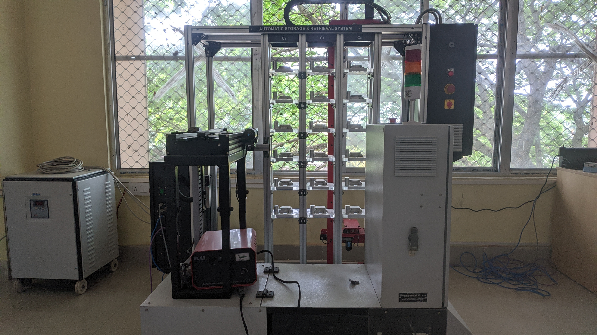
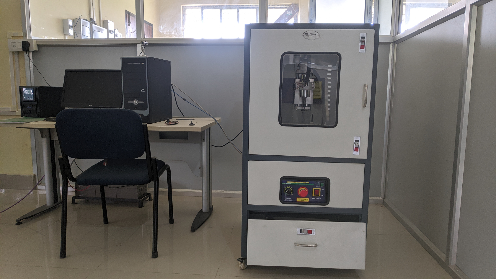

Established in 2018, the Multisilling and Sustainabilty Cell (MSSC) of Assam Engineering College contains various high end hardware tools and development environment that a student can use to impart innovations and holistic thinking skills apart from academic knowledge in collaboration with C-DAC. Apart form this facilities the cell also holds periodic seminars, hackathons and technical sessions. Below are the list of hardware facilities offered by the cell to the students of the college.
Muffle furnace are type of jacketed enclosure used to heat a material to significantly high temperatures while keeping it contained and fully isolated from external contaminants. This are usually lined with stainless steel.
The MSSC also have a 3D printer. One can use it to create a physical object from a CAD model or a three-dimensional digital model, typically by laying down many thin layers of a material in succession.
Infrared thermal camera is valuable diagnostic tools in many diverse applications in and outside of the laboratory, such as materials testing (i.e. asphalt, plastics, and electronics), clinical diagnostics (i.e. testing body temperature) and R&D.
The cell have a Upright Metallurgical Microscopes which can be used to observe transparent and opaque objects. It is equipped with Epi-illumination, transmission illumination system, plan achromatic objectives with sharp & clear/ image and good contrast.
For the electronics enthusiasts, the cell also have a couple of advanced oscilloscopes. One can use it to study and analyse different waveform of a circuit or a system or generate signals.
Apart from the hardwares, the Cell also have some advanced machines like Automatic Storage and Retreival System (ASRS) which is computer-controlled system that automatically place and retrieve loads from set storage location with precision, accuracy and speed. Alongwith it also has PCB prototype making machine, Mechanical tools, Drones, IR thermometers, Projectors etc
 Apart from the aforementioned hardware/machines, the cell also contains some experimental setups for pratical approach. These includes the experimental setup for:
© 2022, Multiskilling and Sustainabilty Cell @ Assam Engineering College